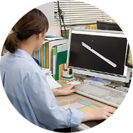
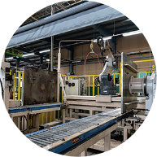
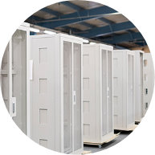
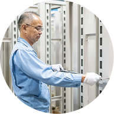
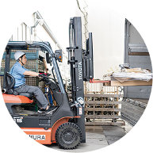
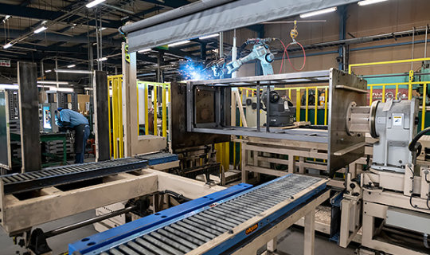
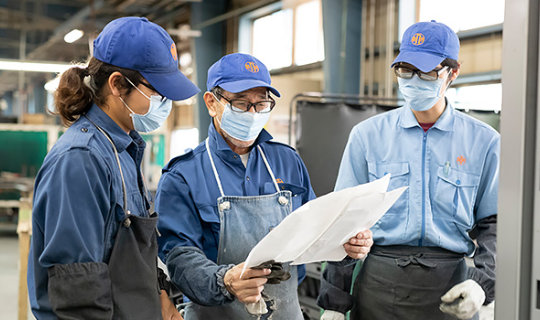
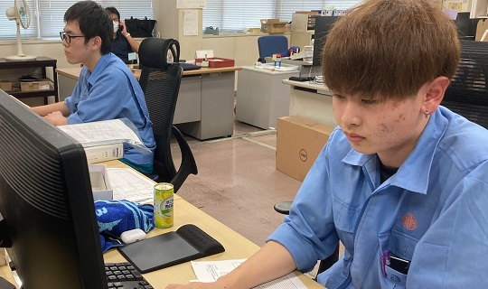

最新鋭の設備とその設備を使いこなす経験
高い技術力でお客様のニーズにお応えします
精密板金加工を得意とする長村製作所では、試作から、単品・量産にも柔軟に対応できる金属板金加工設備の体制を整えています。 お客様のご要望に応えるため、今まで培われたノウハウがございます。綿密なお打ち合わせのもと、 金属板金加工の設計・開発・製造から、塗装・検査・出荷まで一貫して対応可能です。
トータルソリューション
設計から出荷まで一貫対応
-

設計・開発
-

製 造
-

塗 装
-

検 査
-

出 荷
お客様から多種多様なご依頼、その中で要求が高くなる部分は、やはり短納期・低コスト。
その課題を克服するのが長村製作所の一貫生産体制です。
長村製作所では、多種多様なご依頼に設計から、製造、検査、梱包・出荷にまで、社内にて一貫で対応できることが、長村製作所の特徴・強みです。ご相談・ご要望でもお受けいたします。短納期など納期に関しても、お気軽にご相談ください。
- 対応素材
- 鉄
- ステンレス
- アルミ
短納期対応で多くの評価を頂いています
製造業では、「短納期対応」が非常に重要になっています。 弊社も、夕方頃にお問い合わせを頂き「明日までに納品をお願いしたい」といったケースもしばしばあります。
長村製作所では、常に最新の設備の導入を行ったり、多種多様な仕事のなかで迅速な短納期への対応を培っています。
また独自の管理システムにより、工程を把握できる体制になっています。
この独自システムも長村製作所の短納期対応の基盤となっています。 他社で断られてしまった場合でも、ぜひまずはお気軽にお問い合わせください！

職人の技・若手の活躍
長村製作所では、職人の育成に力をいれています。長年培ってきた技術やノウハウを留めず、常に若手社員への技術継承に努めています。
工場では特に受け身の姿勢の人は必要ありません。例えば、数百名働いているような大手企業の工場であれば、受け身の姿勢の人であっても必要とされます。しかし中小製造業では、生産品目が多種多様であり、作業者が1つの工程・作業だけではなく、複数工程を受け持つことがある等、多様な業務をこなすことが若手社員でも求められることが多々あります。長村製作所では、ベテラン社員が培ってきた技術・ノウハウを若手社員の技術継承に力を入れています。


品質と環境への取り組み
長村製作所は、お客様の安心をお届けするため、品質マネジメントシステムの国際規格である「ISO：9001」および、環境マネジメントシステムの国際規格である「ISO：14001」を認証取得しています。当社では以下のISO規格に基づいた品質の保証や環境への配慮を継続して国際規格に順応できるよう、日々努めてまいります。
-
品質・環境方針
-
ISO9001
-
ISO14001
{kind=link}
{kind=link}
{kind=link}